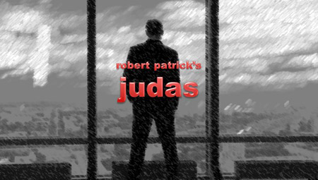
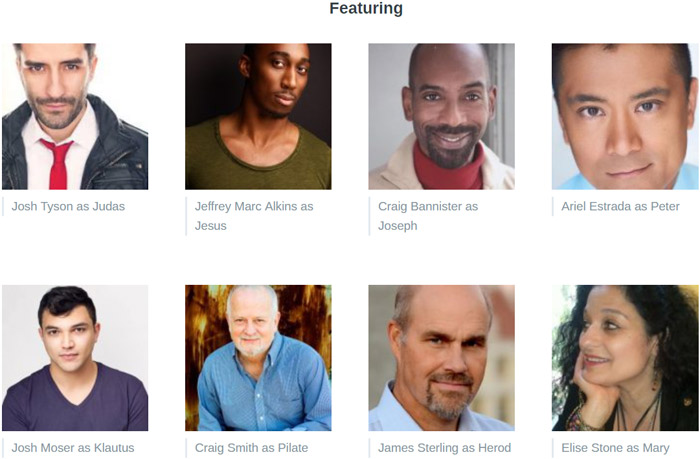

current performancesFor All Performances See Full Calendar |
|||||||||||||||||||||||||
| 
JUDAS By Robert Patrick Directed by Craig Smith showtimes & tickets:April 27–May 13 Tickets available at Ovationtix or call 866.811.4111. For Group Sales Email: info@PhoenixTheatreEnsemble.org Robert Patrick’s long and distinguished career began at New York’s legendary Café Cino in the 1960’s with his first play “Haunted Host.” He went on to become a celebrated pioneer of Off-Off Broadway theatre and the gay-theatre movement and in the 1970’s Samuel French Publishing called him “New York’s Most-Produced Playwright.” His best-known work, “Kennedy’s Children,” was produced in London, Broadway (Tony Award Shirley Knight), and around the world and is still frequently revived. However, Patrick has long held that his seldom-produced “Judas” is his best work. In Patrick’s version of ‘the greatest story ever told,’ Mary is the political revolutionary mother of a reluctant pacifist 30-year old prophet; Pilate is the urbane, witty and reasonable Prefect of the Roman Province of Judea, and Judas is a young man who is a disciple of Jesus of Nazareth and the protégé of Pontius Pilate. Judas struggles with what to believe and who to follow in this modern-dress battle of wills. The play concludes with Pilate and the prophet in an explosive ultimate showdown between simple faith and political opportunity. Craig Smith, Producing Artistic Director, states “this is the perfect conclusion to the PTE 2017-18 season which is thematically based on charismatics and the people who follow them. We began with Moliere’s Tartuffe, followed by Cusumano’s The Cult Play, and now with Judas we have one of the great charismatics of all time in the prophet Jesus of Nazareth – but Patrick has given us another very compelling leader in his singular creation of Pilate. This is a work for 2018 America, it is funny, provocative and deeply moving. I have been waiting for the right time to produce Judas and I think the right time is now.”  |
|||||||||||||||||||||||||
|
|||||||||||||||||||||||||